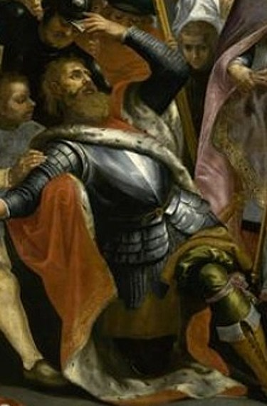

Ar c'hont Gwilhoù
Le comte Guillaume
Earl William
|
A propos des mélodies: Elles sont tirées des "Musiques bretonnes" (Gwerzioù ha Sonioù Breiz-Izel) de Maurice Duhamel, Paris, 1913, où elles sont données comme accompagnant différentes versions de "Ar c'hont Gwilhoù" publiées par F-M. Luzel dans "Gwerzioù II" (1874): Les versions 1 et 3 ont des strophes de 2 vers de 12 pieds (alexandrins), dont le second est répété. La version 5 présente la même structure, suivie d'un distique de 12 et 6 pieds. La version 2 alterne des éléments de 4, 6 et 5 pieds et répète le second vers. La version 4 a également une structure complexe composée de vers de 9, 6 et 12 pieds. Les versions 2, 3 et 5 sont dans le mode majeur, la version 4 est notée dans le mode mineur (mais il s'agit sans doute d'un thème hypodorien où la septième note a été relevée d'un demi-ton). La version 1 est dans le mode du plain-chant grégorien (hypolocrien). Bibliographie Cette gwerz a souvent été collectée. On la trouve: - Sous forme manuscrite, dans la collection de Penguern, t. 89: Ar Princess a Voetou (= Gwerin 4); t. 91, 10: Comtess a Welo - Comtesse de Goelo, 139: Comt Goelo, 166: Ar c'homtess a Woëlo; t. 94, 80: Ar gontess a Welo; t. 95, 17: Ar c'hontess a Gwoelo; Ms. 1013 (Rennes): Ar gontess a Welo (=Bulletin archéoligique de l'Association Bretonne, 1906, Annexe). - Sous forme imprimée, dans le recueil "Gwerzioù II" de Luzel: Ar c'homt Gwillou (Berhet, 1868). Princess ar Gwillou (Pluzunet). Ar C'hont Gwillou, Ploezal, 1871, recueilli par M. Chardin). et dans les "Chants et danses des Bretons" de Quellien: Ar C'hont a Weto. - Dans un périodique: Besco, Fureteur breton I (1905 -6) Remarque Le chant manuscrit est intitulé "Itronez ar Faouet" (La dame du Faouët). On peut donc que La Villemarqué s'apprêtait à entendre une autre version du chant dont il a tiré L'épouse du croisé. C'est sans doute pourquoi, il manque, pour la compréhension de l'histoire, plusieurs passages qu'il a remplacés par des lignes de points. On les a rétablis ici à partir d'un des textes recueillis par De Penguern, "Comtesse de Goëlo" (strophes numérotées de A. à W., texte en italiques). |
Chant collecté par Théodore Hersart de La Villemarqué
|
About the tunes They are drawn from "Musiques bretonnes" (Gwerzioù ha Sonioù Breiz-Izel) by Maurice Duhamel, Paris, 1913, where they are directed to be sung to the different versions of "Ar c'hont Gwilhoù" published by F-M. Luzel in "Gwerzioù II" (1874): Versions 1 and 3 are made up of two 12 syllable lines (alexandrines), whereby the second line is repeated. Version 5 has the same structure with an additional 12 syllable and 6 syllable distich. Version 2 alternates 4, 6 and 5 syllable elements with a repetition of the second line. Version 4 also has an elaborate structure of lines of 9, 6 and 12 syllables. Versions 2, 3 and 5 are in the major mode, version 4 is notated in the minor mode (but it is very likely a hypodorian tune whose seventh note has been raised by half a tone). Version 1 is in the Gregorian chant mode. Bibliography This gwerz was often collected. I will be found: - In handwritten form, in Penguern 's MScollection, t. 89: "Ar Princess a Voetou" (= Gwerin 4); t. 91, 10: "Comtess a Welo - Comtesse de Goelo", 139: "Comt Goelo", 166: "Ar c'homtess a Woëlo"; t. 94, 80: "Ar gontess a Welo"; t. 95, 17: "Ar c'hontess a Gwoelo"; Ms. 1013 (Rennes): "Ar gontess a Welo" (=Bulletin archéoligique de l'Association Bretonne, 1906, Attachment). - As a print, dans in the collection "Gwerzioù II" by Luzel: "Ar c'homt Gwillou" (Berhet, 1868). "Princess ar Gwillou" (Pluzunet). "Ar C'hont Gwillou", Ploezal, 1871, recorded by M. Chardin); And in "Chants et danses des Bretons" by Quellien: "Ar C'hont a Weto". - In a periodical: Besco, Fureteur breton I (1905 -6) Remark In La Villemarqué's MS, the song is titled "Itronez ar Faouet" (The Lady of Faouët). We may therefore infer that La Villemarqué expected another version of the song which he published as The Crusader's Wife. This should explain why several passages which are essential for understanding the story were replaced by lines of dots. They are restored here from one of the versions, recorded by De Penguern, of "Comtesse de Goëlo" (stanzas numbered from A. to W., texts in italics). |
|
BREZHONEK p. 243 I 1. Me wel ar c'hont Gwilhou [1] war an hent ' tont d'ar ger (div w.) Hag araok dirazañ pevar c'hant marc'heger.(div w.) -pevar c'hant marc'heger. 2. Pevar c'hant den armet zo gantañ war an dro, - Deuit-c'hwi, va faj bihan, arestit v'inkane! 3. Selaouit ur plac'hik war 'r menez o kanañ, Hirio a zo seizh vloaz m'he gleviz diwezhañ. 4. - Deuit-c'hwi, berjerennik, kanit ho kanaouenn, Pehini kanec'h aze, barzh al lann bremañ-sonn - [E "Comtesse de Goëlo" ur paourik bihan eo a zo klevet gant ar c'hont] A. - O salokras, Aotroù, salokras na rin ket. Ma breur zo war ar mor, aon 'm-eus na ve beuzet. [2] B. - Dal ta, paourik bihan, na kanit ar zon-se din Ha pa koustfe triwec'h skoed pep poz anei din! C. - O salokras, Aotroù, salokras na rin ket. Ma breur zo war ar mor, aon 'm-eus na ve beuzet. D. - Na paourik bihan, kanit-c'hwi ar zon-se, Pe me ya d'oc'h treuziñ bremañ gant va c'hleze! - E. Ar paourik bihan, gant aon koll he buhez, Gomañsas da ganañ dezhañ e zon nevez: F. - Un dimezell yaouank deus a ger an Naoned Zo dimeet nav miz zo, euredet na n'eo ket. [3] G. Un, daou pe tri deiz zo ez eo gwilioudet Allas, siwazh dezhi maleüruz eo bet, Da lazhañ he c'hrouadur hep bezañ badezet. 5. O bezañ ar map-se ken kaer evel an deiz, Seblantout bezañ map d'ur priñs, pe d'ur roue... - H. - Sesit paourik bihan, sesit ho kanaouenn! Bleset 'peus va c'halon, na c'houlan klevout ken! - I. Hag eñ lakas e zorn e godell e livitenn Ha roas dezhañ eizh skoed e-barzh en aour melen. II J. Ar priñsez gozh lare e kampr d'he merc'h henañ Pa bigne 'n deiz a oa: - Petra vo graet bremañ? K. Aotrou Doue! va merc'h, petra a vezo graet? Erru ar c'hont e kêr, ma vefet eureujet. - L. Bezañ 'n-deus ur c'hoar a zo koant a giz A gorf hag a vizaj, henvel e oa outi. 6. - Dallit-c'hwi, va mamm-gaez, dallit va alc'hwezioù Hag it-c'hwi d'am c'hambr wenn kerc'hat va braverioù! 7. Ha digasit ganeoc'h va sae ruz-inkarnal Evit lakaat d'am c'hoar, pa antreo er zal.. 8. - Na gwiskit hi, va merc'h, gwiskit propik ha koant, Ar senturenn gaerañ, an dantelezh arc'hant! III M. - Bonjour deoc'h, merc'h yaouank, bonjour! Gant ho liv koant, Ho feson a ziskouez oc'h ur plac'h pasiant. N. N'eo ket c'hwi an hini a oa din-me dimezet! En bev pe en marv e renkan he kavet. - IV O. - O Doue, va merc'h kaezh, petra a vezo graet? Refuzet eo ho c'hoar, c'hwi a renk da gavet P. Va mamm, di-aesit an dristañ va habijoù, C'hoazh a vo ge awalc'h evit soufr ar marv! - Q. Va mamm, di-aesit din va habit arvoulous, Ma wiskit dindani va c'hotilhonenn rous! R. Deus va c'hoefoù noz diaesit ar bravañ Gante eo ervad e vin manet klañv. V S. - Demat deoc'h, merc'h yaouank, demat, gant ho liv pal! Dindan an dilhad-se e dougit ho klac'har! 9. - Dindan ar zae-se zo flouridaj kuzhet Pelec'h ema ar verc'h pe map ho-peus ganet? 10. - Me gar bout kenfontet evel amann rouzet, N'am-eus biskoazh na merc'h, na map, Aotroù, ganet! T. Hag eñ 'tapout he dorn neuse war he feultrin: A zilampas al laezh deus he c'habit satin. VI 11. - Deuit aman, sonerien! Sonit ar paz kaerañ! Setu am-eus kavet, an hini a garan! 12. Alo, va sonerien, sonit ur gabotenn! Ez aimp va mestrez koant ha me war an dachenn. U. - Tri miz hanter zo 'boe ma on gant an derzhienn, N'on-me vit chom er zal d'ober ar gabotenn. - V. Hag eñ tapout e dorn war e pognard arc'hant 'N-neus he flañta en he c'halon, neuze, souden. W. - Homan oa an naontekvet am-boa dimezet, Heb biskoazh hini n'am-eus bet euredet. - [4] KLT gant Christian Souchon |
TRADUCTION FRANCAISE p. 243 I 1. Je vois, précédé de quatre cents cavaliers, (bis) Vers le bourg le comte Guillaume [1] s'avancer, (bis) - Guillaume s'avancer. 2. Oui, par quatre cents hommes d'armes escorté, - Mon page, tiens mon cheval, je veux m'arrêter! 3. J'entends le chant d'une fille à l'orée du bois: Sept ans que je n'ai plus entendu cet air-là. 4. - Bergère, approche donc, chante-moi la chanson Que tu chantais sur la lande au creux du buisson! - [Dans "Comtesse de Goëlo" c'est un petit mendiant que le comte a entendu.] A. - Seigneur, excusez-moi, mais je n'en ferai rien: Je craindrais de noyer mon frère: il est marin. [2] B. - Allons, petit, allons, tu chanteras pour moi Et dût-il m'en coûter dix-huit écus, ma foi! C. - Seigneur, excusez-moi, je ne dois pas chanter: Mon frère, le marin, je crains de le noyer. D. - Chante, petit mendiant, Assez de simagrées, Ou bien je te transperce avec ma longue épée! - E. Notre petit mendiant qui tenait à la vie, Lui chanta donc cette nouvelle mélodie: F. - Une fille de Nantes s'était fiancée Neuf mois plus tôt sans s'être encore mariée. [3] G. Il y a deux ou trois jours, elle accoucha, dit-on. Hélas, la malheureuse a tué son garçon Sans que l'eau du baptême ait coulé sur son front. 5. C'était un fils beau comme le soleil. Je crois Que son père était prince, ou bien qu'il était roi... - H. - Arrête ta chanson: elle est triste à cur fendre! J'en ai l'âme blessée; je ne veux plus l'entendre! - I. Puis il tira d'une poche de son manteau Huit écus d'or qu'il a remis au pastoureau. II J. La mère de la belle est montée ce jour-là Dans sa chambre disant: Que ferons-nous, dis-moi? K. Ma fille, au nom de Dieu, dis-moi que ferons-nous? Le comte en ville vient pour être ton époux. - L. Elle avait encore une fille bien tournée De visage et de corps, semblable à son aînée. 6. - De mes coffres, pauvre mère, voici les clés: J'y range tous mes plus beaux atours. Prenez-les! 7. Ma robe rouge écarlate n'oubliez pas. Pour entrer dans la salle ma sur la mettra.. 8. - Revêts-moi donc, ma fille, afin d'être jolie, Ceinture d'or, dentelles d'argent, je te prie! III M. - Bonjour, jeune fille, bonjour! Votre pâleur, Ainsi que vos façons trahissent votre cur. N. Vous n'êtes point celle à qui je suis fiancé! Celle-là, morte ou vive, je veux la trouver. - IV O. - Mon Dieu, ma pauvre fille, alors, que ferons-nous? Il refuse ta sur. C'est toi qu'il veut. C'est tout. P. Ma mère, il me faut mes plus tristes vêtements, Ils seront assez gais pour le sort qui m'attend! - Q. Ma mère, décousez mon habit de velours, Mon jupon couleur sang dépassant tout autour! R. De mes coiffes de nuit, prenez la plus jolie, De celles que j'avais pendant ma maladie. V S. - Jeune fille, bonjour, jeune fille au teint pâle! A quel chagrin ces atours servent-ils de voile? 9. - Cette robe recèle une manuvre immonde: Où se trouve l'enfant que vous mites au monde? 10. - Je veux être fondue comme beurre roussi, Si j'enfantai jamais, Monseigneur, fille ou fils! T. Alors, sur sa poitrine, il a pressé sa main: Et le lait a jailli sur l'habit de satin. VI 11. - Ménétriers, venez! Sonnez vos plus beaux pas! Car celle que j'aime est à nouveau près de moi! 12. Allons, sonneurs, allons, sonnez une gavotte! Ma maîtresse jolie, je prends votre menotte... U. - J'ai souffert de la fièvre, trois mois et demi. Danser la gavotte avec vous, je ne le puis. - V. On le vit se saisir de son poignard d'argent Il le lui planta dans le cur, soudainement. W. - Dix-neuf filles auxquelles je fus fiancé, Sans que je n'en épousasse aucune jamais! - [4] Traduction Christian Souchon (c) 2015 |
ENGLISH TRANSLATION p. 243 I 1. I saw Earl William [1] riding to our town, ahead (twice) Of him a train of four hundred troopers were spread. (twice) - all his troopers were spread. 2. Four hundred men in arms who spread along the road, - My page, here is my horse, for long enough I rode! 3. Now hark, a lass's voice on the hill don't you hear? I've not listened to it for these past seven years. 4. - Come on, shepherdess, come on! Would you sing the song You were singing? To hear it to the end I long. - [In "Comtesse de Goëlo" the singing shepherdess is a poor shepherd boy] A. - O with your leave, my Lord, with your leave, I will not, For it could cause my brother at sea to be lost. [2] B. - I'll hear it, little beggar, and I do insist Aye, should it cost me eighteen pence for each couplet! C. - O with your leave, my Lord, with your leave, I will not, My sailor brother is at sea. He could be lost. D. - That I should not lose my temper, my lad, take care My blade through your heart, instead, could then be your share! - E. The shepherd full of fear lest he should lose his life, Now started his new song of the Earl's future wife: F. - A lady of Nantes has, as the rumour was spread, Been engaged for nine months, but she had not yet wed. [3] G. One, two, three days ago, she delivered a child. Alas, alas, as she feared she would be reviled, She killed the newborn child, before it was baptized. 5. It was a little boy, was as fair as the sun, Must have been of a prince or of a king a son... - H. - Now stop it, shepherd! Of it I shall hear no more! Your song did hurt my heart and I am distressed sore! - I. Then he stuck his hand in the pocket of his coat And produced eight gold crowns for the boy with the goat. II J. The old princess went upstairs to her daughter's room And said: - What shall we do? We must decide it soon. K. My God! What shall we do? My daughter, if you knew: The Earl now is in town and wants to marry you. - L. The princess had a younger daughter who was fair Resembling her sister, had about her an air. 6. - My mother, I entrust you with this key of mine Go to my room and fetch the clothes you will find! 7. Do not forget my dress of scarlet and the shawl That my sister shall wear on entering the hall.. 8. - Now, daughter, put it on, you will wear it with grace Along with a fine belt adorned with silver lace! III M. - Good day to you, young girl with a fair complexion, Your stiff deportment hints at patient submission! N. You're not the one who was engaged to marry me! Alive or dead I must find out where she may be. - IV O. - O God! What shall we do? I ask you for advice. He turned your sister down, wants you at any price. P. My mother, you shall bring the sadest dress you find, T' will be merry enough for what he has in mind! - Q. My mother you shall bring my fine dress of velvet, Lets show below it my petticoat of scarlet! R. Of the nightcaps I wore the handsomest you'll bring, too To mark that I was sick and may be sick anew . V S. - - Good day to you, young girl with a fair complexion! Does this sad attire hide your profound dejection? 9. - Or does it hide some trick involving a bastard? Where is the son or the daughter you delivered? 10. - May I, alive, be browned in a pan like butter, If I ever gave birth to a son or daughter! T. But he seized her hand and pressed it on her bosom: And a squirt of milk was sent up on the satin. VI 11. - Come on, pipers, come on! Come play your finest dance! To find again the lass I loved, I had the chance! 12. Come on, pipers, come on, play a gavotte, somehow! For my sweetheart and I will tread the dance floor now. U. - Three months and a half I've been suffering of fever; I don't feel like dancing a dance whatsoever. - V. But he has grasped his knife with a sharp silver blade And suddenly plunged it in the heart of the maid. W. - She was the nineteenth lass to whom I was engaged, But never did my wooing result in marriage. - [4] Translated by Christian Souchon (c) 2015 |
NOTES
|
[1] Selon les versions "Guillou" (=Guillaume) est remplacé ou complété par "de Goëlo", ou encore "(W)oetou" que Luzel interprète comme "du Poitou". La fiancée infidèle est parfois appelée "Comtesse de Pinblan (Pain-blanc?)". Il ne paraît cependant pas possible de rattacher cette ballade à des personnages réels précis. [2] Sans doute parce que chaque chant triste répété, comme chaque verre qui tinte (selon Gilbert Bécaud), est un marin qui meurt. [3] Dans la seconde version de "La Comtesse de Goëlo" dans le tome 91 des manuscrits de Penguern, la seconde strophe dit, à propos de cette princesse : "Pehini zo dimeet dre ur c'has lizheroù/ Da vravañ priñs yaouank a vale e Poëtou" "Laquelle fut fiancée, par un envoi de lettres/ Au plus beau jeune prince que le Poitou vit naître". [4] Cette conclusion est commune à plusieurs gwerzioù. Dans une autre version, le comte demande aux sonneurs de jouer un air de deuil ("sonit barzh en kañvioù") pour marquer son veuvage. Comme le signale N. Quellien dans "Chansons et danses des Bretons" cette gwerz "remonterait plus haut que notre époque d'assises et de jurés. Elle en est encore aux coutumes locales. [Elle nous montre moins] un fiancé abusé, qu'un seigneur exerçant sur ses terres ou dans sa ville un droit particulier de justice. Ce droit de vie ou de mort n'est même pas contesté par la victime. [5] Depuis la publication en ligne du 2ème carnet de Keransquer en novembre 2018, on sait que ce manuscrit contient, p. 212 et 219, 8 strophes et un résumé des strophes sautées qui permettent de reconstituer la seconde partie de la gwerz. On les trouvera ci-après. La page suivante, p. 220, commence par une transcription de la mélodie de Lez-Breizh telle que F. Silcher l'avait modifiée, suivie de la description de la Fête du Bouc: "Celui qui est le dernier à couper son blé noir (1) dans les montagnes, trouve, un beau matin, un bouc empaillé, au coin de sonchamp : On le porte la nuit avec torches de résine & force cris. " (1) Le blé noir vient du diable et le blé de Dieu. [7] M. Jérémy Loysance suggère de voir dans le comte Guillaume de la gwerz, le héros de la tragédie imprimée à Morlaix en 1815, "Saint Guillaume, comte de Poitou" (Tragedien Sant Guillarm, condt deus a Poetou) que l'on doit à un ouvrier de la manufacture de tabac de Morlaix, Joseph Coat (Jobig Koad, 1789-1858). Cet écrivain très prolifique (selon Anatole Le Braz, il aurait composé plus de 300 pièces en breton qui sont restées sous forme de manuscrits) interprétait lui-même ses pièces à la tête d'une compagnie qu'il avait fondée à Morlaix. Le style de cet auteur n'incite guère à se plonger dans les 128 pages couvertes d'alexandrins bretons émaillés de mots français qui constituent cette pièce de théâtre. Cependant l'examen de la liste des personnages et un survol du texte montrent qu'il ne comprend pas de scène qu'on puisse rapprocher de la gwerz. Pages 119 à 122 Guillaume discute avec une jeune fille, mais celle-ci n'est autre que le diable venu tenter le saint personnage, Sant Guillarm, qu'est devenu le comte (ar C'hondt) à partir de la page 97. C'est au cours d'un entretien avec Saint Bernard de Clairvaux qu'intervient la conversion de ce personnage présenté au début comme rapace et sans scrupule. Cela ne prouve pas pour autant que le comte Guillaume dont la jalousie fait un criminel dans la gwerz ne soit pas le héros de la pièce, Guillaume VIII de Poitou, né en 1099 à Toulouse et mort le 9 avril 1137 à Saint-Jacques-de-Compostelle. Ce comte de Poitou et duc d'Aquitaine, fils de Guillaume IX d'Aquitaine, dit le Troubadour, auquel il succède et père d'Aliénor d'Aquitaine qui fut tour à tour reine de France en 1137, puis reine d'Angleterre en 1152, devint, à la fin du Moyen Âge, un personnage de légende, en partie confondu avec Guillaume de Gellone (750-812) et saint Guillaume de Maleval, un ermite mort en 1157 à lorigine de lordre des Guillemites. |
[1] Depending on the version, "Guillou" (= William) is replaced or completed by "Goëlo", or else by "(W)oetou" which Luzel translates as "Poitou" (the Poitiers area). The unfaithful bride is sometimes dubbed "Comtesse de Pinblan (White-Bread?)". However, it is impossible to link this ballad to historically recorded events. [2] Possibly because a repeated sad song is as ominous as clinking glasses, which, according to certain sayings, causes sailors at sea to die. [3] In the second version of "Comtesse de Goelo" in Book 91 of the de Penguern MS, stanza 2 states, concerning this princess: "Pehini zo dimeet dre ur c'has lizheroù/ Da vravañ priñs yaouank a vale e Poëtou" "Who was betrothed by an exchange of correspondence / To the handsomest Prince of Poitou". [4] This conclusion is common to several gwerzioù. In another version, the Earl orders the pipers to play a mourning air ("sonit barzh en kañvioù") to mark that he has become a widower. As stated by N. Quellien in "Chansons et danses des Bretons" this gwerz "takes us further back than our time of jurymen and courts of assizes. Local customs still prevail. [It features] a fooled fiancé, but above all a lord exercising judicial powers over his lands or his town, whose right of life or death is in no way questioned by his victim. [5] Since the online publication of Keransquer notebook N°2 in November 2018, we know that this manuscript contains, on pages 218 and 219, 8 stanzas and a summary of the skipped stanzas which make it possible to reconstruct the second part of the gwerz. They are found below. The next page, p. 220, begins with a transcription of the melody of Lez-Breizh as modified by F. Silcher, followed by the description of the Stuffed Goat celebration: "The one who is the last to cut his buckwheat (1) in the mountains, finds, one morning, a stuffed goat in a corner of his field: They carry the goat at night with torches of resin, loudly crying. " (1) Buckwheat comes from the devil and wheat from God. [7] Mr. Jérémy Loysance suggests seeing in Count Guillaume in the Breton lament, the hero of the tragedy printed in Morlaix in 1815, "Saint Guillaume, Count of Poitou" (Tragedien Sant Guillarm, condt deus a Poetou) written by a worker in the Morlaix tobacco factory, Joseph Coat (Jobig Koad, 1789-1858). This very prolific writer (according to Anatole Le Braz, he composed no less than 300 pieces in Breton which remained in ms form) used to perform his own pieces at the head of a theatre company he had founded in Morlaix. The style of this author hardly encourages one to delve into the 128 pages covered in Breton alexandrines, interspersed with French words, which encompasses this play. However, examination of the list of characters and an overview of the text show that it does not include a scene to be paralleled to the gwerz. Pages 119 to 122 Guillaume talks with a young girl but she is none other than the devil who has come to tempt the holy character, Sant Guillarm, i.e. the count (ar C'hondt) who has become a saint as from page 97. It was during an interview with Saint Bernard of Clairvaux that the conversion of this character, presented at first as rapacious and unscrupulous, took place. This does not imply, however, that Count William, whose jealousy makes him a criminal in the gwerz, is not the hero of the play, William VIII of Poitou, born in 1099 in Toulouse and died on April 9, 1137 in Saint-James of Compostella. This Count of Poitou and Duke of Aquitaine, son of William IX of Aquitaine, known as "the Troubadour", whom he succeeded and father of Eleanor of Aquitaine who was in turn Queen of France in 1137, then Queen of England in 1152, became, at the end of the Middle Ages, a legendary character, partly confused with William of Gellone (750-812) and Saint William of Maleval, a hermit who died in 1157 at the origin of the order of the Guillemites. |
Extrait du carnet N° 2
Excerpt from copybook N° 2
|
BREZHONEK p. 218 L. - Ma mammig kaezh mar am charit, Va choar yaouank a gwiskfet, Lakait dezhi ma dilhad eured! p. 219 / 131 Chanson 6. Lakait dezhi ma diamanchoù Ha war he fenn ma boukedoù.- N. Ar plach pa oa bet degaset: - N'eo ket houmañ eo ma fried. (On lui mène la 2e) Enfin on lui amène sa femme et il fait la même réponse. Il prie sa femme à danser il organise une fête... 11. - Sonerien, sonit un ton nevez Kollet ma gwreg - adkavet eo. 12. Soner,soner, sonit dous Hag a zañsfe gant ma dous ! 12bis. Kent vit ober un dro-dañs, Kement a gred 'r gwall-chañs ; V. E c'hle(z)e en-deus tapet En he galon -deus hen plantet. ... W. - Me am-eus daouzek a vugale. Te az-peus lazhet neb o mage. = |
TRADUCTION FRANCAISE p. 218 L. - Ma pauvre mère, si vous m'aimez Ma jeune soeur vous la revêtirez, Vous la revêtirez de ma robe de mariée! p. 219 / 131 Chanson 6. Mettez-lui mes diamants Et ma couronne de fleurs.- N. C'est la jeune fille qui se présenta: - Celle-ci n'est pa ma femme. (On lui mène la 2e) Enfin on lui amène sa femme et il fait la même réponse. Il prie sa femme à danser il organise une fête... 11. - Sonneurs, jouez-nous une musique nouvelle J'avais perdu ma femme - Elle est retrouvée. 12. Sonneur, sonneur, jouez moins fort Que je danse avec ma douce! 12bis. Avant de faire un tour de gavotte, Pour conjurer (pour autant qu'on croie à) la guigne, V. Son épée il a saisie Et la lui a plantée en plein coeur. ... W. - J'ai une douzaine d'enfants. Tu a tué celle qui les nourrissait. - = |
ENGLISH TRANSLATION p. 218 L. - My poor mother, if you love me My young sister you will dress up, She shall wear my wedding dress! p. 219/131 Song 6. Let her be adorned with my diamonds And my wedding flower wreath. - N. It was the young sister who came forth - This one is not my wife. (The 2nd daughter enters). At last his wife appears. He first gives the same answer. Then he asks his wife to dance. He sets up a dance party. 11. - Pipers, play us some new tune I had lost my wife - I've found her again. 12. Piper, piper, play less loudly That I may dance with my sweetheart! - 12bis. Before dancing a suite of gavotte, To ward off (as far as we believe in) bad luck V. His sword he seized And planted it in her heart. ... W. - I have a dozen children. You killed the one who fed them. - = |

Guillaume X d'Aquitaine (1099-1137)
par Marten Pepijn vers 1643. (Musée des Beaux-Arts de Valenciennes).